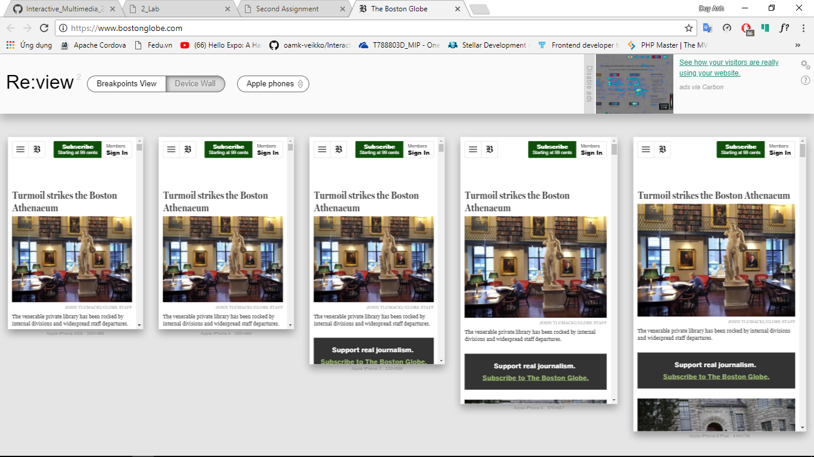

What is the purpose of the RWD? Why it is used? How things are done before RWD? What is the difference?
RWD makes your web page look good on all devices: desktops, tablets and phones.
Your web page should look good, and be easy to use, regardless of the device.
Web pages should not leave out information to fit smaller devices, but rather adapt its content to fit any device.
Before using RWD, your web page can have a good look at desktop but not at another devices.
How css media queries can help you building responsive web sites?
Media query is a CSS technique introduced in CSS3.
It uses the @media rule to include a block of CSS properties only if a certain condition is true.
Why to use em (font) based sizing for example margins?
If you go all-in with ems, you can start setting things like margin and padding with ems.
That means when you notch that body font-size down, spacing around your site also notches down.
Article is already 7 years old, do we have any new technology which can be used to achieve same type of UI responsiveness as described in the article. Buzz words: (CSS Grid, Flexbox)
Second Exercise
In this exercise I will test 2 website to test the responsive of these websites. This is a link of 2 website that you can test by yourself
https://mediaqueri.es/. This website I cant connect from my computer because it has a warning from Google Chrome that this website try to collect my personal information.
Here is my result:

Third, Fourth Exercises
Because I can do 2 exercise in 1 file HTML so that this is a link you can see it. In exercise 3 you need to know about CSS reset & meta viewport. I think you should read these article: